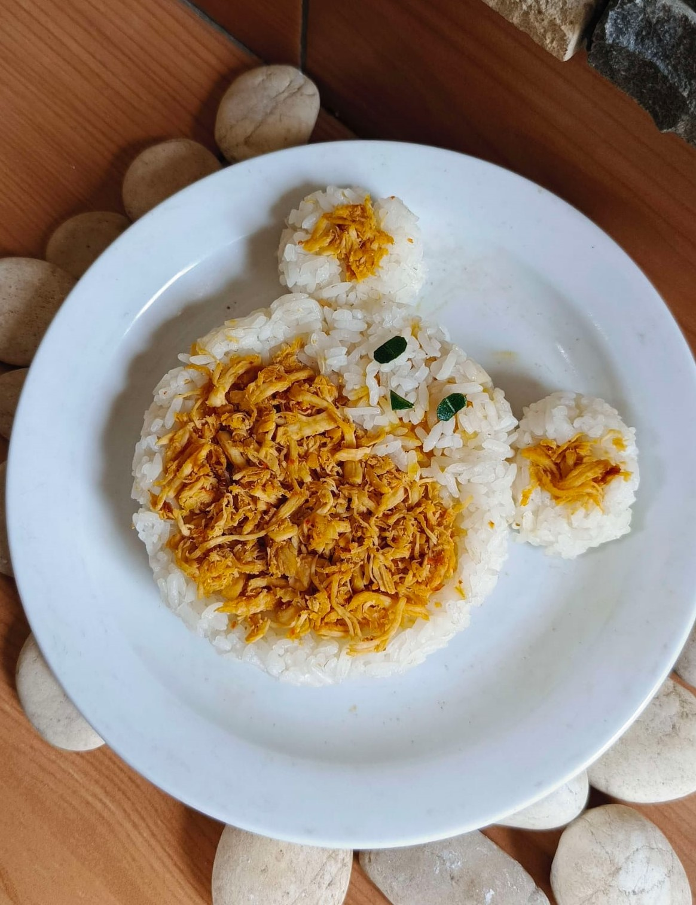

News Website

Rahasia Resep Nasi Ayam Teriyaki
Nasi Ayam Teriyaki
Bahan-bahan:
- 2 pcs daging ayam paha atas filet
- 1/2 bawang bombay
- Sedikit tepung maizena
- 100 ml saus teriyaki
Cara Pembuatan:
- Potong ayam ukuran bites. Taburi dengan tepung maizena. Panaskan sedikit minyak. Goreng ayam sampai berubah warna. Masukkan bawang bombay. Tumis sampai ayam 1/2 matang.
- Masukkan saos teriyaki. Masak sampai saos susut. Tuang di atas nasi. Tabur dengan daun bawang dan biji wijen sangrai. Lengkapi dengan telur mata sapi sebagai pelengkap jika suka./li>
Kembali